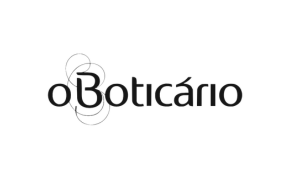
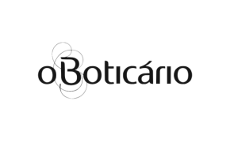
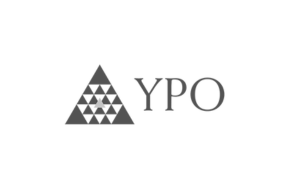
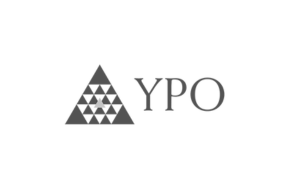

Comunicação com Influência
Como gerar adesão, engajamento e clareza usando linguagem estratégica e storytelling.
Comunicação corporativa que sai do discurso e entra na rotina. Clareza nas conversas, decisões mais rápidas e comportamentos que se refletem nos indicadores — já nas semanas seguintes.
Pessoas competentes, bem-intencionadas e experientes… mas os resultados não acompanham quando as conversas travam.
O custo disso aparece em clima, retrabalho, conflitos silenciosos e performance abaixo do potencial.
Palestra corporativa não é para “animar por uma hora”. É para mudar a forma como as pessoas pensam, falam e decidem no trabalho.
Não é motivação momentânea. É mudança de linguagem, atitude e tomada de decisão — percebida no dia seguinte, na reunião seguinte e nos indicadores.
Trainer em Programação Neurolinguística (PNL) e comunicação de alta performance há mais de 15 anos. Fundador da eXpertar (2012) e responsável por formar mais de 1.000 alunos em programas presenciais e imersões.
Ao longo da carreira, percebeu algo comum em empresas e equipes: o problema raramente era técnico — era comunicacional. Daí nasceu uma abordagem autoral: PNL da vida cotidiana — menos teoria abstrata, mais aplicação real no dia a dia corporativo.
Palestras que unem clareza conceitual, exercícios aplicáveis, storytelling e conexão direta com desafios reais da empresa.

Cada palestra é adaptada ao contexto, cultura e objetivos da empresa. Abaixo, trilhas mais procuradas.
Como gerar adesão, engajamento e clareza usando linguagem estratégica e storytelling.
Tomada de decisão, gestão emocional, delegação, presença e rituais de execução.
Como reduzir resistência e acelerar a adoção de processos com linguagem e experiências corretas.
Valores, metas claras e rituais que sustentam energia e disciplina no longo prazo.
Conversas difíceis, feedbacks e acordos que preservam relações e resultados.
Percepção de valor, linguagem de decisão e condução ética de negociações.
Presencial, online ou híbrido. De 60–90min a imersões de 4–8h. Conteúdo 100% adaptado ao seu momento.
“A experiênica potencializou muito o meu desempenho nos negócios, e melhorou ainda mais a minha relação cotidiana, me tornou uma pessoa muito mais segura e positiva.”
— Empresária do ramo de Estética“Time comercial adorou o treinemento, foi dinâmico e cheio de práticas aplicáveis logo no momento seguinte, com o próximo atendimento.”
— Gerente Comercial UnimedAlgumas marcas pelas quais já passamos com palestras, treinamentos e consultorias.


 



 

Em uma conversa rápida de briefing, identificamos os gargalos de comunicação, alinhamos objetivos e desenhamos o formato ideal para o seu momento.